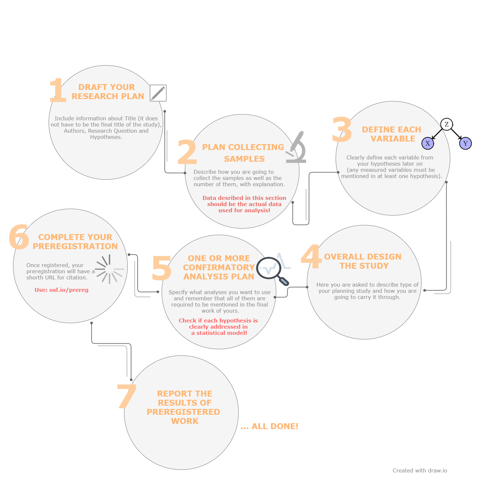
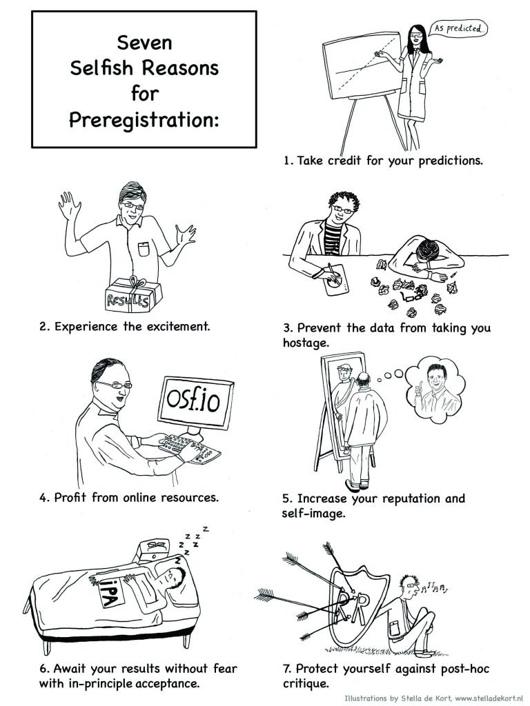

Preregistration¶
Preregistration is the practice of registering research plan before they are conducted. The preregistered report format requires reseachers to submit a description of the confirmatory hypotheses, variables, study methods and analysis plan prior to data collection. This practice allows researchers to circumvent the publication bias toward significant findings and prevent the data from taking you hostage. Preregistration makes the distinction between hypothesis testing and exploratory (hypothesis generating) research more clear. Data set won’t affect hypothesis and vice versa.
Click here to see some examples of preregistrations segregated by discipline and study type.
Types of preregistration¶
Unreviewed
Unreviewed registration report contains detailed description of researcher’s plans for a study as possible, and researcher saves those plans in a time-stamped, uneditable archive; can be shared with reviewers, editors, and other researchers.
Reviewed
In reviewed registration report researcher submits a detailed proposal for a study to a journal before conducting the study (these registered reports have the same virtues as preregistration, but they also address the problem of publication bias because the studies are published regardless of their outcomes!); proposed study will be informative regardless of its outcome.
RRR - Registered Replication Reports
In registered replication reports researchers direct replication of one or more original findings. Many labs follow the same preregistered plan, and the results from all of those independent studies are published collectively regardless of the outcomes of individual studies.
How to make a preregistration?¶
Follow a template from Open Science Framework at Word / GoogleDocs or AsPredicted and fill it with your own research ideas.
Rules of preregistration¶
Once registered, your preregistration will have a short URL for citation. Remember to include a link to your registration report.
Report the results of ALL preregistered analyses regardless of outcome.
ANY unregistered analyses must be transparently reported as exploratory finding Do not stop yourself before make transparent changes to analysis plan but remember to report the change and its justification (it have to be reported somehow as intuitive suggestions).
Why all researchers should preregistrate?¶
Eric-Jan Wagenmakers and Gilles Dutilh published in 2016 an article with seven selfish reasons for preregistration. In the arguments invoked, they highlight the personal benefits of pre-registration and the increased potential for success in an academic career. This section will be based on the proposals proposed by the authors.
{kind=link}
Preregistration allows you to get credit for having been able to anticipate.
By designing repetitive workflows and sharing them with the different components of our research project, we can allow others to gain an in-depth understanding of our work. This encourages them to review our methods, test our code, propose useful changes, and make informed contributions to the further development of our project.
Preregistration is exciting.
Researcher cannot tinker with the analysis in a post hoc fashion. It means that researcher stands before a clear question: will the theory be confirmed or disconfirmed?
Preregistration prevents you from being taken hostage by your own data.
Each software has errors. The analysis of the software that supports the spacecraft shows that, despite being carefully checked, it still has bugs. It may cause bugs that transforms results. Performing pre-registration and sharing data allows you to improve the operation of subsequent stages of data analysis. There are free testing platforms for testing open source projects (CircleCl, Travis) and automatically running software tests when there is news on Github, and notifications say whether a bug has been found or everything is working well.
Preregistration is easy.
When a scientist has an idea for his work, the pre-registration process itself is very much easier, especially thanks to platforms such as Open Science Framework or As Predicted (as above) where we can easily gather all the information. Well-documented analyzes help us maintain easy access to all project outputs that can be effectively saved. By working in a team, colleagues can easily earn credit for their contributions. In addition, by using the underlying dataset and methods, we can easily adhere to top-level journal guidelines.
Preregistration increases your reputation.
Preregistered experiments are the signal of researchers’ confidence. Scientist who is not afraid to submit his or hers theories to an unambiguous test is the best factor of scientificity. It also shows that scientist wish to conduct science in a transparent way and have done everything in hers or his power to shield herself or himself from hindsight bias and confirmation bias. Applying reproducibility practices separately across different parts of a project, such as data, independently executable codes and scripts, protocols and reports, allows other researchers to test and reuse our work in their research, and ensures fair recognition of our work. Scientists who publish their work with basic information are cited more often because their research results can be widely replicated and trusted. This fair credit system encourages researchers to continue to maintain repetition in their work.
Preregistration allows you to have manuscripts accepted “in principle“ regardless of how the results pan out.
It is possible to make a preregistration proposal to a journal that offers Registered Report format (mentioned earlier in Types of preregistration section). Thanks to approvment of preregistration proposal, regardless of the results, the journal provides publication of the results regardless of whether they confirmed the hypothesis, or not. It also allows you to improve the registered report thanks to reviewer’s comments before the data collection process begins.
Preregistration can shield you from post hoc critique.
Repetitive research must include the complete history and narrative of the project planning and development process. This includes information about the data, tools, methods, codes and documentation used in the research project. By keeping a complete history of our work, we can ensure the durability of the research, the reliable citation / recognition, and the usefulness of our and other work in our research fields. Preregistration protects the researcher from the influence of unwanted factors such as hidden moderator, inadequate manipulation check, different instruction and others. If you allow reviewers to take look at your plan of research, you will have it checked by scientists from your field.